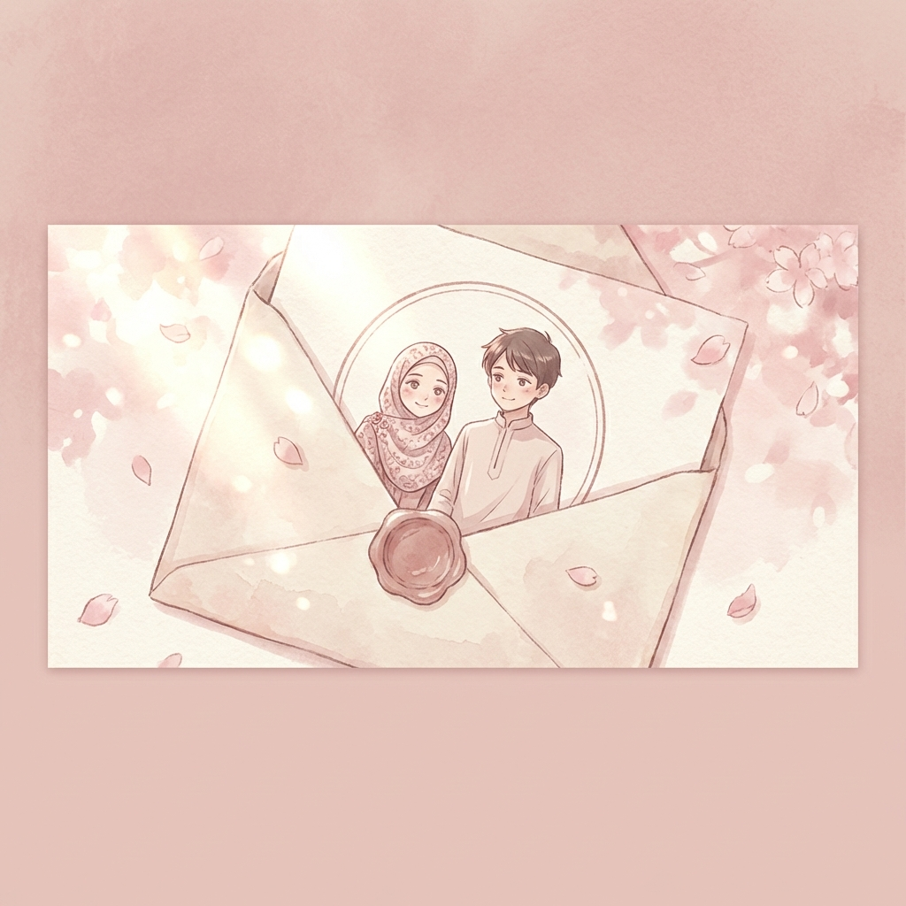

Halo, ro'yatul hasanah
×

Untuk ro'yatul hasanah,
“Jika mencintaimu adalah sebuah perjalanan, maka aku ingin tersesat selamanya di
dalam ketulusanmu.”
Terimalah Bunga Ini
Semesta Menjadi Saksi
Langkah Bersamamu
Klik amplop untuk membuka seluruh cerita ✨